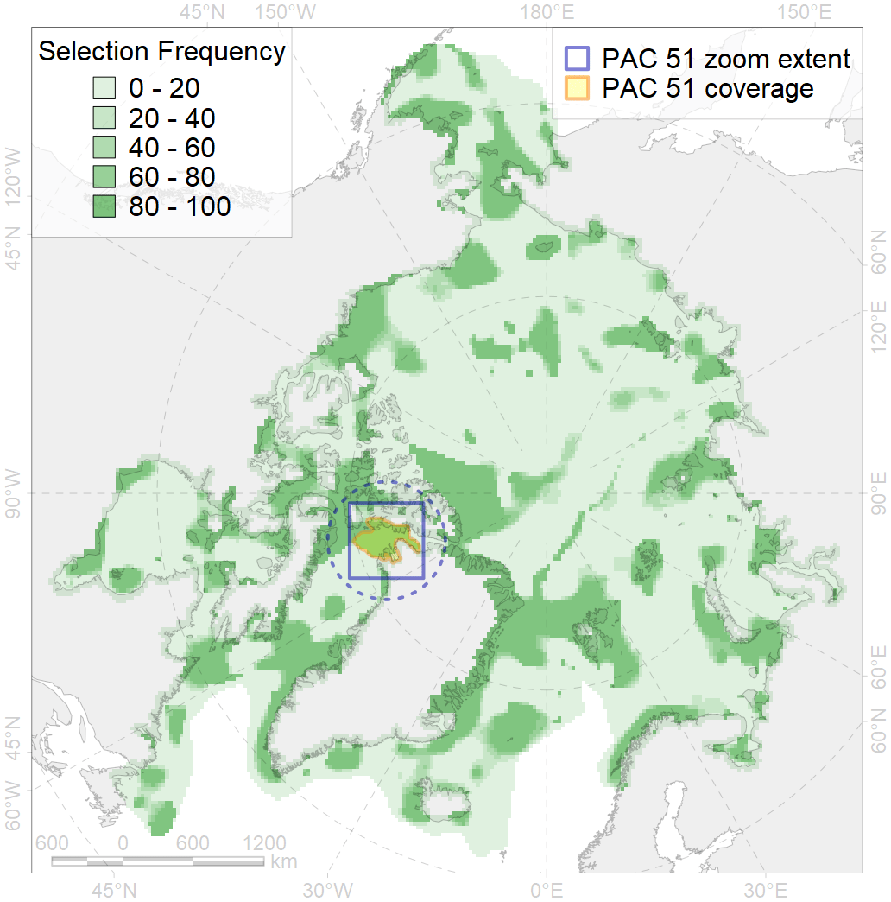
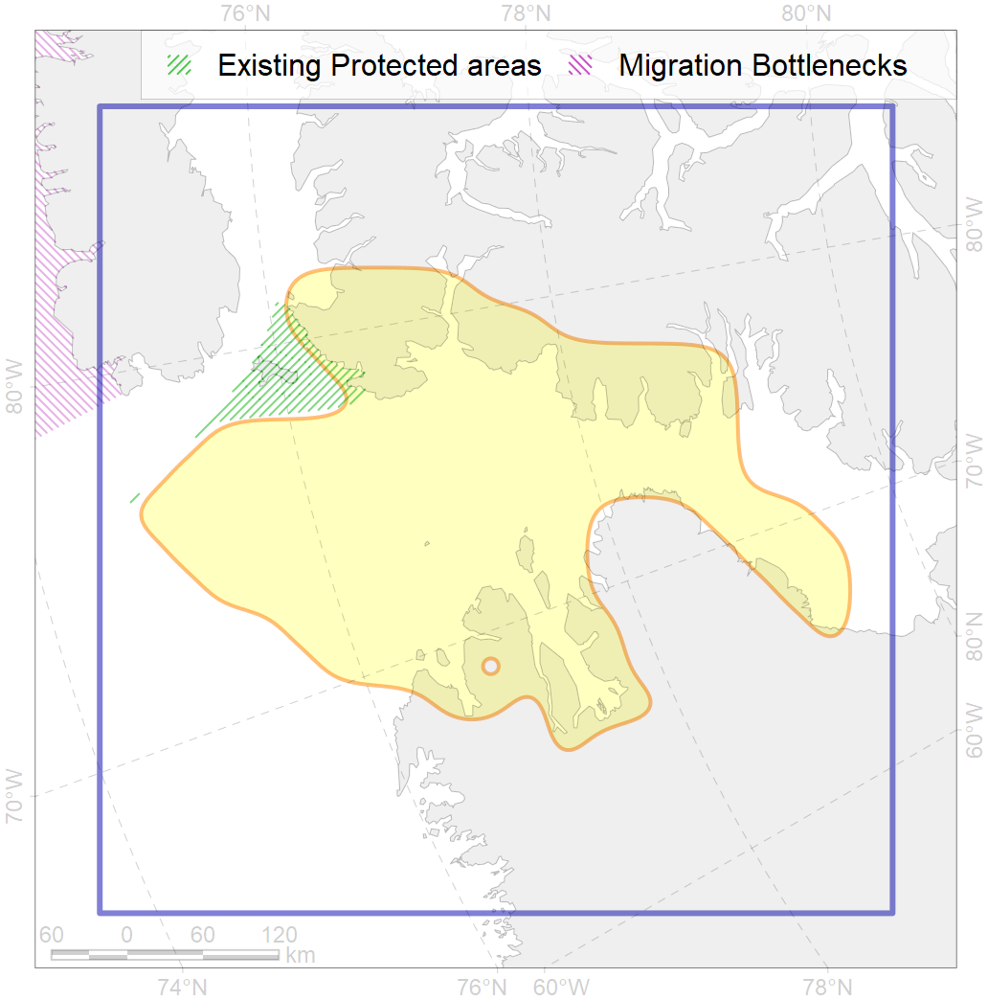

51
For more information regarding this PAC and to conduct custom spatial analysis using the PAC data or any spatial query, please consult Accenter.

1
CFs entirely within the PAC area
19
CFs at least 25% within the PAC area
14
CFs with their target entirely achieved in the PAC
28
CFs with at least 50% of their target achieved in the PAC
| CF ID | CF Name | Proportion in the PAC | Conservation Target | Contribution to ArcNet Target Achievement | PAC’s Contribution to the Achieved Target |
|---|---|---|---|---|---|
| 5092 | Narwhal (Monodon monoceros), Smith Sound stock, summer grounds / core area | 100.0% | 72.0% | 128.9% | 100.0% |
| 5081 | Narwhal (Monodon monoceros), Inglefield Bredning stock, summer grounds | 99.9% | 48.0% | 113.3% | 100.0% |
| 5096 | Beluga (Delphinapterus leucas) and Narwhal (Monodon monoceros) winter ground, North Water polynya | 96.3% | 96.0% | 99.9% | 97.7% |
| 7235 | Kelp forests, North West Greenland | 94.4% | 30.0% | 111.9% | 98.8% |
| 7257 | Benthic communities, Baffin bank | 84.5% | 70.0% | 120.7% | 84.5% |
| 3020 | MIZ biological communities, April, northern Canadian Arctic Archipelago | 83.8% | 12.0% | 697.9% | 97.7% |
| 9009 | Polar bear (Ursus maritimus), Kane Basin subpopulation, home range | 76.8% | 32.4% | 229.1% | 96.3% |
| 9027 | Polar bear (Ursus maritimus), Kane Basin subpopulation, denning grounds | 67.7% | 64.8% | 95.5% | 94.9% |
| 3126 | Polynya biological communities, Baffin Bay | 66.1% | 20.0% | 326.6% | 68.9% |
| 2064 | Bearded seal (Erignatus barbatus) important habitats, Greenland | 61.6% | 24.0% | 245.2% | 68.6% |
| 2037 | Ringed seal (Phoca hispida) feeding grounds, Baffin Bay region | 60.1% | 24.0% | 235.4% | 84.4% |
| 8042 | Biological communities, glacial termini, Queen Elizabeth Island | 59.0% | 30.0% | 191.5% | 73.0% |
| 6035 | Ivory gull (Pagophila eburnea) breeding colonies, Canadian Arctic Archipelago | 51.4% | 64.8% | 69.3% | 54.8% |
| 5114 | Narwhal (Monodon monoceros) summer feeding grounds, Kane Basin | 49.0% | 48.0% | 95.2% | 93.1% |
| 5091 | Narwhal (Monodon monoceros), Smith Sound stock, summer grounds | 49.0% | 48.0% | 100.8% | 96.0% |
| 5006 | Beluga (Delphinapterus leucas), Baffin Bay stock, winter grounds | 37.0% | 48.0% | 76.9% | 39.3% |
| 7148 | Benthic communities, III.3. 1. Northwest Greenland shelf | 30.9% | 11.5% | 256.5% | 63.1% |
| 7150 | Benthic communities, III.3.1.2. Northwest Greenland glacial troughs | 29.9% | 8.8% | 329.8% | 54.4% |
| 7149 | Benthic communities, III.3.1.1. North Greenland medium and low profile shelf | 27.5% | 11.1% | 236.0% | 58.8% |
| 3033 | MIZ biological communities, July, northern Canadian Arctic Archipelago | 24.3% | 24.0% | 99.0% | 61.7% |
| 5042 | Bowhead whale (Balaena mysticetus), Baffin Bay population, winter grounds | 19.3% | 48.0% | 40.1% | 27.3% |
| 7034 | Benthic communities, north-western Greenland Zoogeographic region | 15.3% | 20.6% | 66.5% | 40.6% |
| 6094 | Ivory gull (Pagophila eburnea) breeding colonies foraging range buffer, Canadian Arctic Archipelago | 14.4% | 43.2% | 32.1% | 18.5% |
| 6091 | Little auk (Alle alle alle) breeding colonies foraging range buffer, Greenland and North America | 14.2% | 48.0% | 28.3% | 20.2% |
| 6058 | Common eider (Somateria mollissima borealis) breeding / moulting grounds, West Greenland | 11.7% | 67.2% | 16.8% | 16.7% |
| 3052 | Multiyear Ice biological communities, September, Baffin Bay | 10.3% | 18.0% | 50.9% | 12.2% |
| 3021 | MIZ biological communities, April, Baffin Bay | 9.5% | 12.0% | 78.1% | 12.0% |
| 7021 | Benthic communities, Eastern Canadian Arctic Archipelago Zoogeographic region | 7.5% | 9.7% | 74.8% | 12.4% |
| 7014 | Benthic communities, Canadian - Greenland Province, Arcto-Atlantic Zoogeographic region, core area | 7.3% | 7.4% | 94.0% | 13.1% |
| 6041 | Ivory gull (Pagophila eburnea) postbreeding grounds, Canadian Arctic | 6.8% | 21.6% | 30.7% | 11.9% |
| 6031 | Little auk (Alle alle alle) breeding colonies, Greenland and North America | 6.2% | 72.0% | 8.7% | 8.4% |
| 1003 | Walrus (Odobenus rosmarus rosmarus) winter grounds, Canadian Arctic Archipelago | 6.1% | 67.2% | 8.7% | 7.6% |
| 2014 | Bearded seal (Erignatus barbatus) whelping grounds, northern Canadian Arctic Archipelago | 5.9% | 24.0% | 23.1% | 14.8% |
| 6008 | Brent goose (Branta bernicla hrota) breeding / moulting grounds, Canadian Arctic Archipelago | 5.9% | 24.0% | 22.6% | 11.2% |
| 3034 | MIZ biological communities, July, Baffin Bay | 5.0% | 24.0% | 19.7% | 8.1% |
| 2007 | Bearded seal (Erignatus barbatus) whelping grounds, Baffin Bay | 4.9% | 24.0% | 17.8% | 6.2% |
| 5103 | Bowhead whale (Balaena mysticetus), Baffin population, spring-autumn grounds | 4.5% | 24.0% | 18.7% | 10.3% |
| 4074 | Fish communities, Canadian-Greenland Zoogeographic District,High Arctic Shelf Province, Arctic Region | 4.5% | 7.4% | 58.4% | 8.6% |
| 6106 | Thick-billed murre (Uria lomvia lomvia) breeding colonies foraging range buffer | 4.2% | 48.0% | 8.4% | 6.2% |
| 1002 | Walrus (Odobenus rosmarus rosmarus) summer grounds, Canadian Arctic Archipelago | 4.0% | 33.6% | 11.4% | 7.8% |
| 2027 | Hooded seal (Cystophora cristata) feeding grounds | 3.0% | 38.4% | 7.9% | 6.9% |
| 9002 | Polar bear (Ursus maritimus), Baffin Bay subpopulation, home range | 3.0% | 32.4% | 9.2% | 7.6% |
| 3051 | Multiyear Ice biological communities, September, Northern Canadian Arctic Archipelago | 2.3% | 18.0% | 12.1% | 5.8% |
| 4029 | Arctic charr (Salvelinus alpinus), American anadromous populations, feeding grounds | 2.3% | 38.4% | 5.8% | 5.0% |